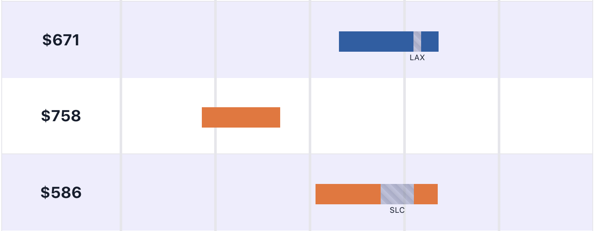
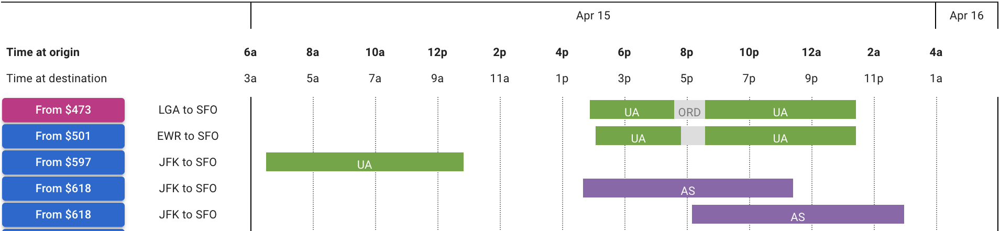
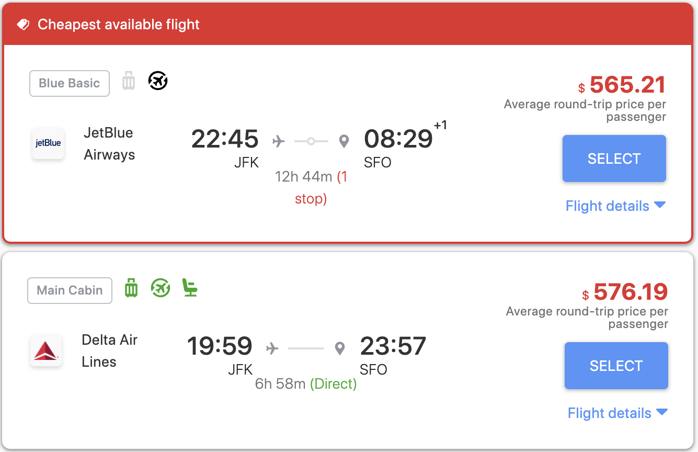
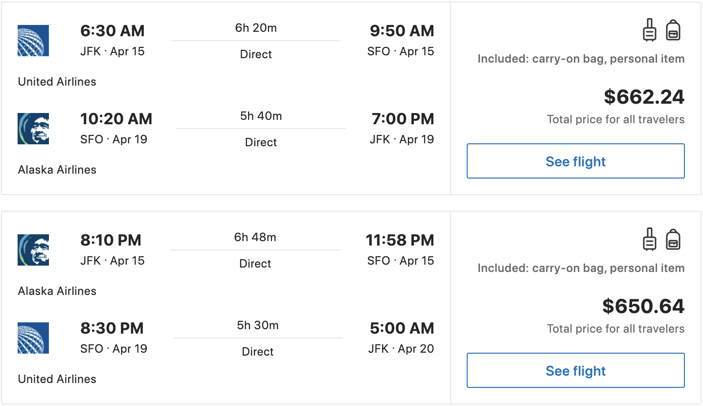
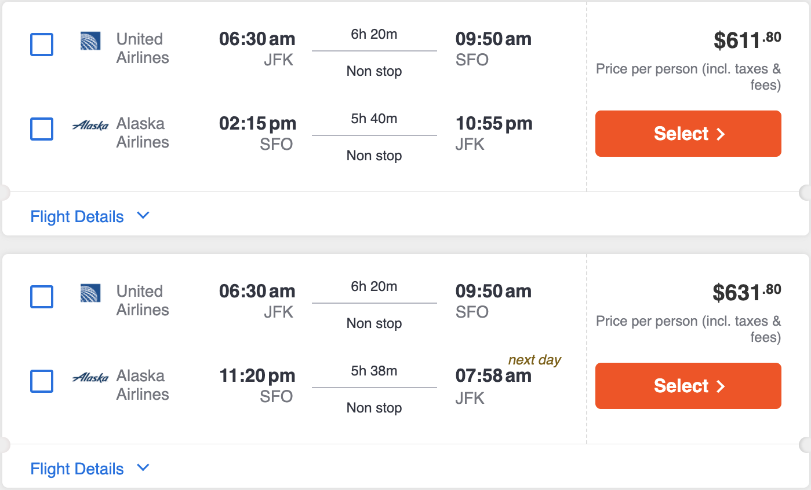
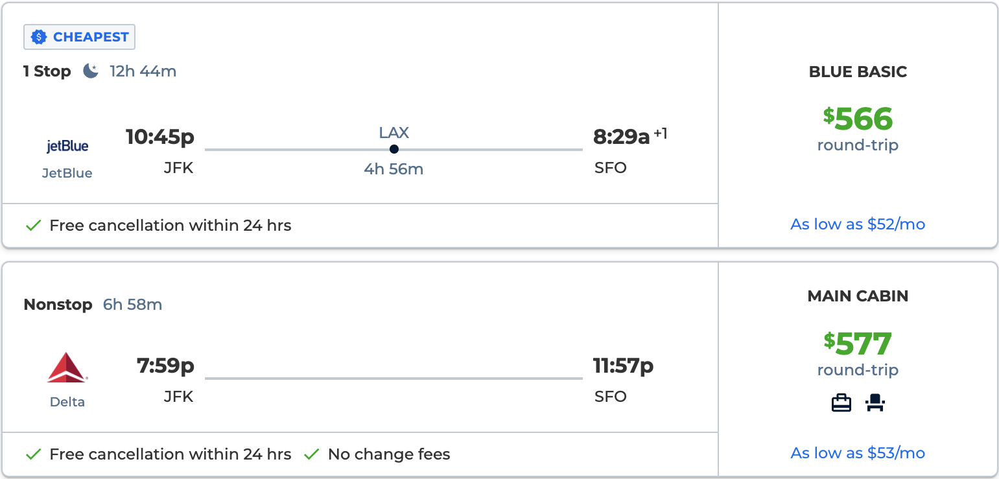
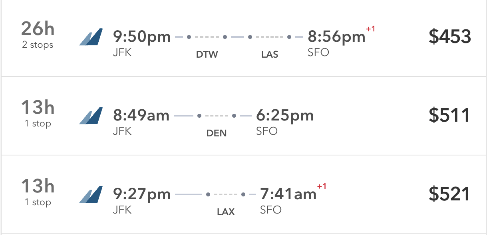
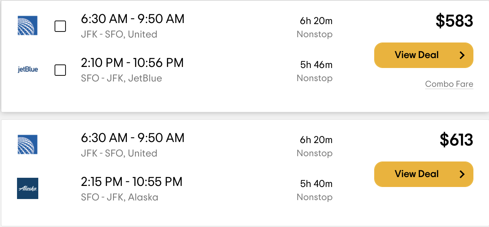

Linear Layout
Why doesn't any major flight search website that I'm aware of display their results using time bar graphs?
Here's an example of what flight search results typically look like:
Screenshot of Google Flights from March 2022.
At a glance, I cannot glean much about the tradeoffs between the options. In order to make a comparison, I have to focus on the text of each result in detail.
Compare the experience with these results which are presented using time bars:
 Hipmunk user interface from 2010. Screenshot by Brian Kelly, used under CC BY 2.0. Cropped from original.
Hipmunk user interface from 2010. Screenshot by Brian Kelly, used under CC BY 2.0. Cropped from original.
For an insightful analysis of time bars and other user interface elements in the context of train schedules see "Case study: Train schedules" from Magic Ink by Bret Victor (2006).At a glance, I can make various comparisons between options:
- Which flight takes off earlier?
- Which flight lands later?
- Which flight is longer?
- Which flight spends more time in layovers?
Hipmunk's UI is also denser. Compare how much vertical space a time bar occupies on Hipmunk compared to that of a textual result on Google Flights. The more information you can quickly comprehend from a user interface without having to scroll it, the better.
Which user interface do you prefer? I have a strong preference for the time bar visualization due to how much information it conveys at a glance.
Let's take a look at various flight search services to see what kinds of interfaces they use for communicating their results.
Examples using time bar representation
First we'll take a look at services that use time bars. As we'll see, none of the major flight search engines appear here.
Flight Penguin
Screenshot of Flight Penguin from March 2022.
Flight Penguin is a Chrome extension that does flight search. It's built by some of the same people who built Hipmunk. It seems to be fairly recent — the press articles I saw announcing Flight Penguin were from April 2021.
ITA Matrix by Google
Screenshot of ITA Matrix by Google from March 2022.
ITA offers flight search technology that is used by many travel companies and airlines. ITA Matrix is intended as a demo of this technology. I think Matrix's intention of being a demo manifests in at least a couple of ways.
You cannot buy flights through ITA Matrix — once you've selected your flights, it provides the information you need to purchase the flights elsewhere (e.g. from the airline or a travel agent).
ITA Matrix depends on some internal infrastructure that is deprecated and planned for retirement. To keep ITA Matrix available, a group of volunteers at Google have been using their 20% time to rewrite it on top of newer infrastructure*.* See this FlyerTalk Forum post.
I'm grateful that ITA Matrix continues to be maintained.
Hipmunk
Hipmunk user interface from 2010. Screenshot by Brian Kelly, used under CC BY 2.0. Cropped from original.
Unfortunately Hipmunk is no longer available for use — it was retired on January 23, 2020*.* See Concur Hipmunk FAQs.
Examples using textual representation
Now we'll look at how a variety of popular flight search engines display their results. The results are primarily conveyed using text.
Agoda
Screenshot of Agoda from March 2022.
Like Skiplagged, this UI conveys the number of layovers visually but other details require studying the text. For example, at a glance I cannot tell which flight lands earliest.
Booking.com
Screenshot of Booking.com from March 2022.
CheapOair
Screenshot of CheapOair from March 2022.
Expedia
 Screenshot of Expedia from March 2022.
Screenshot of Expedia from March 2022.
Google Flights
Screenshot of Google Flights from March 2022.
Kayak
Screenshot of Kayak from March 2022.
Momondo
Screenshot of Momondo from March 2022.
Priceline
Screenshot of Priceline from March 2022.
Skiplagged
Screenshot of Skiplagged from March 2022.
Like Agoda, this UI conveys the number of layovers visually but other details require studying the text. For example, at a glance I cannot tell which flight lands earliest.
TripAdvisor
Screenshot of TripAdvisor from March 2022.
Speculating on the rarity of time bars
We've seen that none of the major flight search engines use time bars in their flight results. Why is this? I don't know but here are some possible explanations for why one wouldn't use time bars:
- They don't know about time bars.
- It would bring the company negligible benefit. Perhaps after implementing time bars, the company wouldn't observe changes in any metric they care about. Perhaps the engine is so good at recommending flights that users don't spend much time comparing them — they pick among the top two or three flights.
- It would harm the company. Perhaps it would change user behavior in undesirable ways.
- It would hinder the user. Perhaps the time bar interface has disadvantages that I'm overlooking. Maybe users would be confused by time bars due to a lack of familiarity. Maybe there are disadvantages even for users that are familiar with them.
What do you think? Do you prefer the time bar representation? Why aren't they more commmon?
View Comments